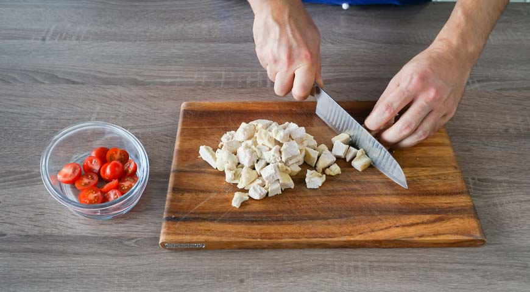

Традиционный салат "Цезарь"
Салат получил название не по имени Гая Юлия Цезаря, а по имени человека, наиболее часто называемого автором этого блюда — американского повара итальянского происхождения Цезаря Кардини (Caesar Cardini (англ.)рус.). По легенде, салат был изобретён Кардини 4 июля 1924 года (в День независимости США), когда на кухне почти ничего не осталось, а посетители требовали пищи. В 1953 году салат «Цезарь» отмечен Эпикурейским обществом в Париже как «лучший рецепт, появившийся в Америке за последние 50 лет».
По свидетельству дочери Цезаря Кардини, её отец, вопреки распространённой версии рецепта, никогда не добавлял в салат анчоусы (лёгкий рыбный привкус в соусе обуславливается наличием анчоусов в составе вустерского соуса). Легенда о том, что в салате якобы присутствовали анчоусы, появилась благодаря брату Цезаря, Алексу Кардини, который добавил анчоусы и назвал блюдо «Салат авиатора» (Алекс служил военным летчиком).
В 1970-х годах дочь Кардини сказала, что оригинальный рецепт включал в себя целые листья салата, которые гости ресторана должны были поднять за стебель и съесть пальцами; вареные яйца; и итальянское оливковое масло.
Хотя оригинальный рецепт не содержал анчоусов, современные рецепты обычно включают анчоусы в качестве основного ингредиента, который часто эмульгируется в бутылочных версиях. Заправки Caesar в бутылках сейчас производятся и продаются многими компаниями.
ЭНЕРГЕТИЧЕСКАЯ ЦЕННОСТЬ НА ПОРЦИЮ:
- КАЛОРИЙНОСТЬ 245 ккал
- БЕЛКИ 20 грамм
- ЖИРЫ 11 грамм
- УГЛЕВОДЫ 14 грамм
Калорийсность расчитана из сырых продуктов
ИНГРИДИЕНТЫ:
- Зеленый салат 1 пучок
- Помидоры 1 шт
- Куриное филе 300г
- Белый хлеб 6 кусков
- Соус "Цезарь" по вкусу
- Сливочное масло 2 ст.ложки
- Чеснок 2 зубчика
- Сыр пармезан по вкусу
ПОШАГОВЫЙ РЕЦЕПТ ПРИГОТОВЛЕНИЯ
Шаг 1
Подготовьте ингредиенты для простого салата Цезарь с курицей. Сначала сварите куриное филе. Для этого вымойте его, поместите в кастрюлю и залейте горячей водой. Доведите до кипения и варите 45 минут. Дайте остыть.
Шаг2
Пока варится куриное филе, сделайте сухарики для салата. Для этого срежьте с хлеба корку, мякиш нарежьте кубиками. Выложите их на противень, выстланный бумагой для выпечки, и поместите в духовку, нагретую до 160°C, на 10-15 минут. Они должны подсохнуть и стать хрустящими. Дайте остыть.
Шаг3
Перепелиные яйца для салата сварите вкрутую. Для этого поместите их в ковшик, залейте холодной водой и доведите до кипения. Варите 5 минут. Воду слейте, яйца залейте холодной водой и дайте остыть. Очистите и разрежьте на половинки.
Шаг4
Листья салата вымойте и хорошо обсушите, разложив на бумажном полотенце. Порвите руками.
Шаг5

Куриное филе нарежьте небольшими кубиками. Помидоры черри вымойте, обсушите и разрежьте на половинки.
Шаг6
Половину сыра нарежьте кубиками, оставшийся — натрите на мелкой терке.
Шаг7
Приготовьте чесночный соус для простого салата Цезарь с курицей. Чеснок пропустите через пресс в небольшую мисочку. Добавьте растительное масло, горчицу, майонез, посолите и поперчите по вкусу. Тщательно перемешайте.
Шаг8
На плоскую тарелку выложите половину листьев салата и полейте их небольшим количеством соуса. Затем уложите половину сухариков и куриного филе. Снова полейте соусом. Выложите оставшиеся листья салата, сухарики, куриное филе и сыр, нарезанный кубиками.
Шаг9
Полейте оставшимся чесночным соусом. Простой салат Цезарь с курицей украсьте помидорами черри и перепелиными яйцами. Посыпьте тертым сыром и сразу подайте на стол.